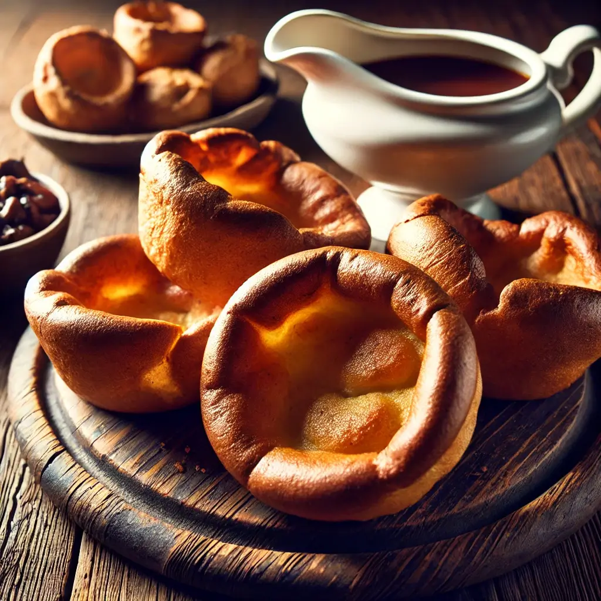

Remove giblets from the turkey. Pat the turkey dry and season the
cavity with salt and pepper.
Stuff the cavity with lemons, garlic, onions, rosemary, and thyme.
Loosen the skin of the turkey breast by gently sliding your hand
under it, and spread softened butter between the skin and the meat.
Rub remaining butter over the skin of the turkey. Season the skin
with salt and pepper.
Place turkey in a roasting pan, breast-side up. Pour the chicken
stock into the bottom of the pan.
Roast for approximately 13-15 minutes per pound, basting every 30
minutes with pan juices. Cover loosely with foil if the skin starts
browning too much.
Check for doneness with a meat thermometer (internal temperature
should be 74°C/165°F in the thickest part of the breast).
Let the turkey rest, covered with foil, for 30 minutes before
carving.
Yorkshire Pudding

Ingredients
200g plain flour
4 large eggs
200ml milk
100ml water
Vegetable oil or beef drippings
Instructions
Preheat oven to 220°C (425°F).
Whisk the flour, eggs, milk, and water together until smooth and
lump-free. Rest the batter for 30 minutes.
Pour a small amount of oil or drippings into each hole of a 12-hole
muffin tin. Place the tin in the oven to heat until the oil is
smoking hot.
Quickly pour the batter into the tin, filling each hole about
two-thirds full.
Bake for 20-25 minutes without opening the oven door, until the
puddings are puffed and golden.
Christmas Pudding
Ingredients
200g suet or butter, grated
200g breadcrumbs
250g brown sugar
200g plain flour
250g dried mixed fruits
100g candied peel
2 apples, grated
1 tsp mixed spice
1/2 tsp nutmeg
Zest and juice of 1 orange
3 large eggs
150ml dark beer (e.g., stout)
50ml brandy (optional)
Instructions
Mix the suet, breadcrumbs, sugar, flour, fruits, peel, spices, and
apple in a large bowl.
Stir in the orange zest, juice, eggs, beer, and brandy. Mix until
combined and thick.
Grease a pudding basin and spoon in the mixture, pressing down
lightly. Cover with parchment paper, then foil, and tie securely
with string.
Steam for 6 hours, topping up the water as needed.
Cool and store in a cool, dry place. Steam again for 2 hours before
serving.
Treacle Sponge
Ingredients
150g golden syrup
150g self-raising flour
150g butter, softened
150g sugar
3 large eggs
1 tsp vanilla extract
2 tbsp milk
Instructions
Grease a pudding basin and pour the golden syrup into the bottom.
Beat the butter and sugar until light and fluffy. Gradually add the
eggs, one at a time, beating well.
Fold in the flour and vanilla extract, then stir in the milk.
Spoon the mixture over the syrup and cover the basin with parchment
paper and foil.
Steam for 2 hours, ensuring the water is topped up as needed.
Turn out onto a plate and serve with custard.
Apple Crumble
Ingredients
For the filling:
6 apples (e.g., Bramley), peeled, cored, and sliced
50g sugar
1 tsp ground cinnamon
1 tbsp lemon juice
For the crumble topping:
200g plain flour
100g butter, chilled and cubed
100g sugar
Instructions
Preheat oven to 180°C (350°F).
Toss the apples with sugar, cinnamon, and lemon juice. Spread in a
baking dish.
Rub the butter into the flour until the mixture resembles
breadcrumbs. Stir in the sugar.
Sprinkle the crumble topping evenly over the apples.
Bake for 40-45 minutes until the topping is golden and the filling
is bubbling.
Serve warm with custard, cream, or ice cream.
Beef Wellington
Ingredients
1kg beef tenderloin (center-cut)
2 tbsp olive oil
250g mushrooms, finely chopped
100g pâté (optional)
8 slices prosciutto
500g puff pastry
1 egg, beaten
Salt and pepper, to taste
Instructions
Preheat oven to 200°C (400°F).
Season the beef with salt and pepper, then sear in a hot pan with olive oil for 2-3 minutes on each side
until browned. Let it cool.
In the same pan, cook the chopped mushrooms over medium heat until all the moisture evaporates and they
become dry. Let the mixture cool.
Spread pâté (if using) over the cooled beef, then top with the mushroom mixture.
Lay out the prosciutto slices on a sheet of plastic wrap, then place the beef on top and roll it tightly.
Chill in the fridge for 10 minutes.
Roll out the puff pastry on a floured surface and wrap the beef in it. Seal the edges and brush with the
beaten egg.
Bake for 25-30 minutes, or until golden brown and the internal temperature of the beef reaches 50-55°C
(120-130°F) for rare, or 60°C (140°F) for medium.
Rest the Wellington for 10 minutes before slicing and serving.
Lemon Meringue Pie
Ingredients
1 pre-baked pie crust
200g sugar
2 tbsp cornstarch
1/4 tsp salt
480ml water
4 large egg yolks
60g butter
1/2 cup fresh lemon juice
1 tbsp lemon zest
4 large egg whites
1/2 tsp cream of tartar
1/4 cup sugar (for meringue)
Instructions
Preheat oven to 180°C (350°F).
In a saucepan, whisk together the sugar, cornstarch, and salt. Gradually add the water and cook over
medium heat, stirring constantly until thickened.
In a separate bowl, whisk the egg yolks, then slowly temper with the hot sugar mixture. Return everything
to the saucepan and cook for 2-3 more minutes. Remove from heat and stir in butter, lemon juice, and zest.
Pour the lemon filling into the pre-baked pie crust.
In a clean bowl, beat the egg whites with cream of tartar until soft peaks form. Gradually add 1/4 cup
sugar and continue to beat until stiff peaks form.
Spread the meringue over the lemon filling, sealing the edges. Bake for 10-12 minutes, or until the
meringue is golden brown.
Let the pie cool before serving.
Chocolate Lava Cake
Ingredients
150g dark chocolate (70% cocoa)
115g butter
2 large eggs
2 egg yolks
50g sugar
1 tsp vanilla extract
30g plain flour
Butter and cocoa powder (for greasing ramekins)
Instructions
Preheat oven to 220°C (425°F). Grease four ramekins with butter and dust with cocoa powder.
In a heatproof bowl, melt the chocolate and butter together over simmering water, stirring until smooth.
Whisk the eggs, egg yolks, sugar, and vanilla extract until well combined. Gradually add the melted
chocolate mixture and stir in the flour until smooth.
Pour the batter into the prepared ramekins, filling each about three-quarters full.
Bake for 12-14 minutes until the edges are set but the center is still soft.
Let the cakes rest for 1 minute before inverting onto plates. Serve immediately with ice cream or whipped
cream.
Mince Pies
Ingredients
225g cold butter, diced
350g plain flour
100g caster sugar
1 large egg
300g mincemeat
Icing sugar, for dusting
Instructions
Make the pastry: Rub the butter into the flour until the mixture
resembles breadcrumbs. Stir in the sugar, then bind the mixture
with the egg. Knead lightly, wrap in cling film, and chill for 30
minutes.
Preheat oven to 200°C (400°F).
Roll out the pastry to about 3mm thick. Cut out circles with a
pastry cutter and line a muffin tin with the circles.
Spoon a teaspoon of mincemeat into each pastry case.
Cut smaller circles or shapes for the lids. Place them on top and
press edges to seal.
Bake for 20 minutes until golden. Cool, dust with icing sugar, and
serve.
Eggnog
Ingredients
4 large egg yolks
100g caster sugar
500ml whole milk
250ml double cream
1 tsp vanilla extract
1 tsp ground nutmeg (plus extra for garnish)
120ml dark rum, bourbon, or brandy (optional)
4 large egg whites (optional, for extra froth)
Instructions
Whisk the egg yolks and sugar in a bowl until pale and thick.
Heat the milk, cream, vanilla, and nutmeg in a saucepan over medium
heat until steaming (do not boil).
Gradually whisk the hot milk into the egg yolk mixture. Return the
mixture to the saucepan and cook gently, stirring constantly, until
it thickens slightly.
Remove from heat and cool. Stir in the alcohol if using.
If you want a frothy finish, whisk the egg whites until soft peaks
form, then fold into the eggnog before serving.
Chill, garnish with nutmeg, and serve.
Mulled Wine
Ingredients
750ml red wine (e.g., Merlot or Shiraz)
150ml orange juice
2 oranges, sliced
2 cinnamon sticks
4 cloves
3 star anise
75g brown sugar
50ml brandy (optional)
Instructions
Combine the wine, orange juice, orange slices, cinnamon sticks,
cloves, star anise, and sugar in a large saucepan.
Heat gently over low heat for 10-15 minutes, stirring to dissolve
the sugar. Do not let it boil.
Stir in the brandy, if using, and remove from heat.
Strain into mugs or glasses and garnish with orange slices or a
cinnamon stick.